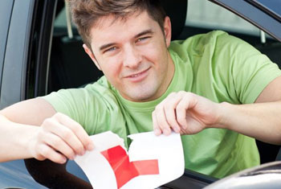
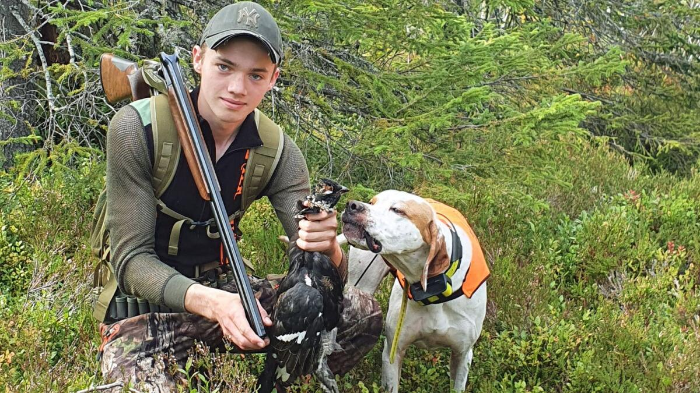

Siste nytt fra Talappen.no
Alt du trenger å vite om oppkjøring for motorsykkel og bil
Kjøreopplæringen er over, og du er endelig oppmeldt til den avsluttende oppkjøringen. Det eneste som står mellom deg og en fremtid som selvstendig sjåfør er den praktiske førerprøven. Er du klar?
Mia (19) om dykkerlappen og ferie på Bali
Mia tok dykkerlappen på Bali i sommer. "Det var den beste sommeren i mitt liv" forteller en solbrun og blid Mina når vi møter henne på stranden. Her er hennes erfaringer og tips til deg.

Dette må du huske på før du tar Jegerprøven
Fra og med det året du fyller 14 år kan du ta jegerprøven. Du kan likevel delta på opplæringsjakt for småvilt det året du fyller 14 og 15 år, uten jegerprøven. For all annen jakt, uansett alder, må du ha jegerprøven.
